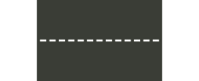
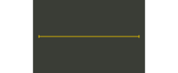
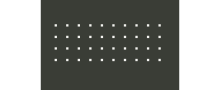

Road markings
Signage Atlas road markings.
25 items: Drawn 25
Markings
25 items: Drawn 25
1001Stop line at signals or police controlDrawn 1001.3Zig-zag lines at a signal crossingDrawn1001.4Zig-zag lines at a zebraDrawn1002.1Stop line at Stop signDrawn1003.1Give way to traffic from the right at a roundaboutDrawn
1001.3Zig-zag lines at a signal crossingDrawn1001.4Zig-zag lines at a zebraDrawn1002.1Stop line at Stop signDrawn1003.1Give way to traffic from the right at a roundaboutDrawn 1004Hazard warning lineDrawn1004.1Hazard warning line (higher speed)Drawn1005Lane lineDrawn1005.1Lane line (higher speed)Drawn1008Centre lineDrawn1008.1Centre line (higher speed)Drawn1010Edge line across a junction mouthDrawn1012.1Edge lineDrawn1013.1Double white linesDrawn1014Deflection arrowDrawn
1004Hazard warning lineDrawn1004.1Hazard warning line (higher speed)Drawn1005Lane lineDrawn1005.1Lane line (higher speed)Drawn1008Centre lineDrawn1008.1Centre line (higher speed)Drawn1010Edge line across a junction mouthDrawn1012.1Edge lineDrawn1013.1Double white linesDrawn1014Deflection arrowDrawn
1001.3Zig-zag lines at a signal crossingDrawn1001.4Zig-zag lines at a zebraDrawn1002.1Stop line at Stop signDrawn1003.1Give way to traffic from the right at a roundaboutDrawn
1003.3Give way to traffic from the right at a mini-roundaboutDrawn1003.4Mini-roundabout discDrawn1003AGive way to traffic on major roadDrawn1004Hazard warning lineDrawn1004.1Hazard warning line (higher speed)Drawn1005Lane lineDrawn1005.1Lane line (higher speed)Drawn1008Centre lineDrawn1008.1Centre line (higher speed)Drawn1010Edge line across a junction mouthDrawn1012.1Edge lineDrawn1013.1Double white linesDrawn1014Deflection arrowDrawn
1017No waiting during times shown on signDrawn1018.1No waiting at any timeDrawn1022STOP word markingDrawn1023AWarning of Give Way just aheadDrawn1038Indication of traffic lanesDrawn
1055.1Crossing studsDrawnzebra-stripesZebra crossing stripesDrawn